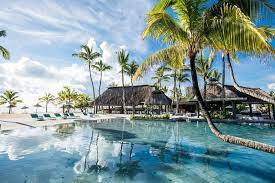

Mauritius
Mauritius is an island nation located in the Indian Ocean off the southeast coast of the African continent. It is known for its diverse culture, stunning beaches, and tropical climate. Mauritius is a popular tourist destination with its crystal clear waters and white sandy beaches. The country is renowned for its hospitality and its rich culture, which is a blend of Indian, African and European influences. Mauritius offers a variety of activities for tourists, from water sports to hiking and biking. The island is also home to numerous wildlife reserves and national parks, which allows visitors to explore the diverse flora and fauna of the island. Additionally, the country is home to some of the best resorts and hotels in the world, offering luxurious accommodations and amenities. Mauritius is also a great place to shop. Its capital city, Port Louis, is home to numerous shopping malls and boutiques, as well as traditional markets. Here, visitors can find a variety of items ranging from clothing and jewelry to souvenirs and arts and crafts. Mauritius is also known for its delicious cuisine. The country’s cuisine is a mix of Indian, African, Asian and French flavors. Seafood is a staple on the island, and visitors will have no trouble finding a variety of restaurants serving up fresh, local dishes. Mauritius is a beautiful country with plenty to offer. From its stunning beaches and lush national parks to its delicious cuisine and vibrant nightlife, Mauritius is a great destination for any traveler.
This island is a hidden gem in the world and is an increble setting for a relaxing holiday. I went to this country as I have family living here and decided with my family to go visit them and explore the beautiful country for 2 weeks. On this trip i tried scuba diving for the first time which was a sureal experience which I would love to do again.
Some examples of the beautiful Mauritian landscape that I gathered during my stay on the island.
.png)
.png)
.png)
Mauritius is a small island in the Indian Ocean and is a popular tourist destination due to its picturesque landscape. The landscape of Mauritius is mainly comprised of tropical forests, lush green hills, and white sandy beaches. The island is especially known for its stunningly beautiful beaches, which are lined with palm trees and surrounded by crystal clear waters. The interior of the island is covered in dense rainforests, which are home to a diverse range of flora and fauna. The forests are also home to some of the rarest species of fauna on the planet such as the Mauritius kestrel and the pink pigeon. The hills of Mauritius are carpeted in lush green vegetation and dotted with small, quaint villages. The coast of Mauritius is a paradise for beach-goers, as the island’s many beaches are some of the best in the world. From the popular Flic en Flac beach in the west to the calm waters of Belle Mare in the east, the beaches of Mauritius offer something for everyone. Overall, the landscape of Mauritius is incredibly beautiful and diverse, offering visitors a wealth of opportunities to explore and enjoy the landscapes of a small paradise.
The sun setting over the ocean in Mauritius is a truly breathtaking and awe-inspiring sight. The sky is lit up with warm, vibrant colors and the horizon is painted with yellow, orange and pink hues. The sun casts its golden light over the vast expanse of the ocean’s surface, creating a beautiful and calming atmosphere. The sun slowly sinks into the sea, its light reflecting off the waves and creating an incredible display of colors. As the sun sets, the sky is filled with a brilliant pastel palette that is both beautiful and calming. The reflection of the sun’s light on the waves creates a mesmerizing ripple effect that can be seen for miles. The sun setting over the ocean in Mauritius is a magical experience that cannot be forgotten. The beauty of the sky and the ocean is something to be treasured and admired. The sun setting over the ocean can be a great way to relax and take in the beauty of nature. It is a perfect way to end a day, and a reminder of how truly amazing and beautiful our world is.
Mauritius is a beautiful island nation in the Indian Ocean, and its beaches are some of the most stunning in the world. With its golden sand, crystal clear waters and lush tropical surroundings, Mauritius is an ideal destination for beach lovers. The beaches on the east coast are the most popular and offer stunning views of the Indian Ocean as well as a variety of activities and amenities. The north coast offers more secluded beaches and is ideal for those looking for a more private beach experience. The west coast is home to some of the most spectacular beaches on the island, with tranquil lagoons, dramatic cliffs and lush vegetation. No matter which beach you choose, you will be sure to find a great selection of activities and amenities to enjoy. From swimming and snorkeling to beach volleyball, there is something for everyone. Many of the beaches also have great restaurants and bars where you can enjoy a refreshing drink or a delicious meal. Mauritius is also a great destination for watersports enthusiasts. With its warm waters and reliable winds, it is an ideal spot for windsurfing, kiteboarding, sailing and more. No matter what kind of beach experience you are looking for, you are sure to find it in Mauritius. With its stunning beaches and great selection of activities, it is the perfect destination for a beach holiday.
.png)
Experiencing this holiday with my family was an amazing experience. We travelled the island indulging in as many activities as we could find. Aside is an image of me along with my family next to a waterfall in a safari park which we spent the day in. This is just one example of the beautiful aesthetic of the island.
It was a once in a lifetime experience and we were so lucky to be able to explore the country. We spent most of our time in the capital city, Port Louis. We were able to explore the city and its many attractions. We went to the Citadel Fort, which was very interesting and got to learn a lot about the history of the city. We also visited the botanical gardens, which were absolutely stunning. We also took a boat trip to an island nearby and got to see the amazing marine life. We also travelled to some of the smaller towns and villages around the island and got to experience the local culture and cuisine. The food was amazing and the people were so friendly and welcoming. We also went to the beach and spent some time relaxing in the sun. We also took a tour of some of the tea plantations and got to learn about the history and culture of the area. Overall, our trip to Mauritius was one of the best family trips we have ever taken. We were able to make so many memories that will last a lifetime.